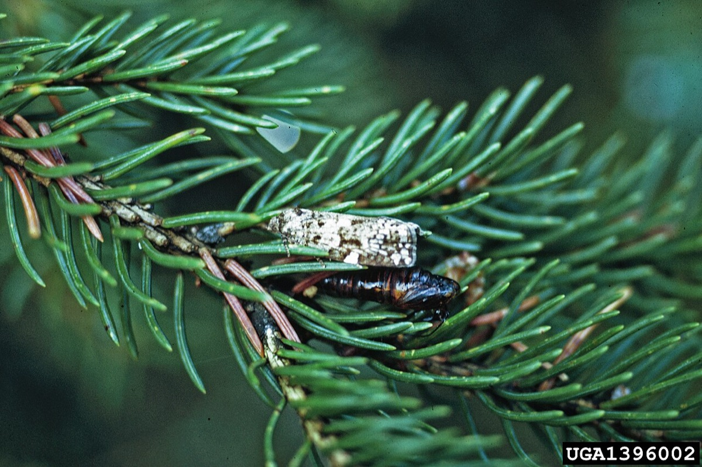

Spruce Budworm
Choristoneura fumiferana
- Also called
- Eastern spruce budworm, SBW
- Kind
- insect
- Native to Vermont
- yes
- Legal status
- Native softwood defoliator; not regulated. Monitored by FPR's Forest Health program. (checked 2026-10-30)
Pictures

Names
Spruce budworm (SBW), Choristoneura fumiferana, a native moth whose caterpillars eat the needles of spruce and fir. The FPR table lists it as eastern spruce budworm on balsam fir and spruce in northern Vermont.
Range and habitat
Hosts: balsam fir and spruce, and occasionally larch, pine and hemlock (FPR 2023 report). The trap sites that report are in the northeast and northern part of the state (Essex, Orleans, Caledonia and Chittenden counties).
How to identify (by season; look-alikes and the key difference)
Not described in the sources read.
Through the year
No seasonal dates are recorded for this note yet.
Signs on the land (tracks, scat, browse, nests, holes, calls)
Defoliation of fir and spruce crowns. In consecutive years of severe outbreaks, trees may be completely defoliated, which can lead to dieback and death of the infested trees (FPR 2023).
Role in the forest (what it eats, what eats it, what it needs)
Outbreaks recur. In 2022 the average catch was a historic 99.3 moths per trap; in 2023 it fell to 9.6 (FPR trap tables; the earlier years from 2010 to 2021 averaged between 0.1 and 8.3). A search summary of FPR's 2022 report says larvae were found at only three of seven sites and at about one per site, well below the threshold of seven larvae per branch that would suggest intervention, so Vermont was not in an outbreak.
What helps it thrive (light, soil, shelter, food and the trees it uses)
This is a native insect that damages trees in outbreaks, so nothing here is advice to encourage it. The sources read give no information on what causes its outbreaks or what conditions favor it; what they say about its hosts is under Range and habitat, and the only management they give is under Managing for it.
Managing for it (habitat practices) and living with it (conflicts and damage)
The report gives no landowner advice. Fir and spruce stands matter as deer winter cover (White-tailed Deer), and the deer-yard guidance notes that spruce is more resistant to spruce budworm than balsam fir (Balsam Fir, Red Spruce). Ask the county forester about local conditions before changing management.
Legal status
None found.
Sources
- Vermont FPR, Forest Insect and Disease Conditions in Vermont 2023: https://fpr.vermont.gov/sites/fpr/files/documents/2023%20Conditions%20Report.pdf (read 2026-10-30)
- Vermont FPR, Forest Insect and Disease Conditions in Vermont 2022 (search summary only): https://fpr.vermont.gov/sites/fpr/files/doc_library/2022%20Conditions%20Report_0.pdf
What this page is based on
Kind of source: primary-agency (FPR forest insect and disease conditions report 2023, read as text; 2022 detail from a search summary)
What was read: Vermont FPR 'Forest Insect and Disease Conditions in Vermont 2023' (91 pages, read as text, the spruce budworm entry and trap table). The 2022 larval survey result and the larval threshold are from a search summary of the 2022 report, not read. The report does not describe the insect or give landowner advice.
Last checked: 2026-10-30
Vermont land and forest reference, built 2026-11-01. Rules and dates here are summaries, not legal advice; dates shift with elevation and year. Photo and recording credits · Note: _reference/US-VT/Species/Spruce Budworm.md